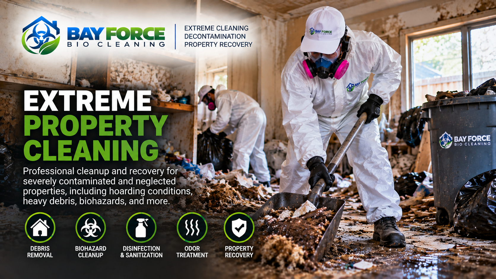

SPECIALTY CLEANING & PROPERTY RECOVERY
Extreme Property Cleaning
Some properties require far more than standard house cleaning. Bay Force Bio Cleaning provides specialized cleanup, decontamination, and property recovery for heavily affected homes and difficult cleaning situations.

OUR APPROACH
Extreme Property Cleaning May Include
Heavy-Duty Cleaning
Detailed cleaning of heavily affected rooms, surfaces, fixtures, and other areas beyond the scope of regular cleaning.
Debris & Material Removal
Removal and organization of unwanted materials and debris as appropriate for the condition of the property.
Professional Decontamination
Cleaning and decontamination using professional products and procedures appropriate to the conditions encountered.
HEPA Filtration
HEPA filtration equipment may be used when appropriate to help manage airborne particles during the cleanup.
Odor Treatment
Additional odor-treatment options may be available when persistent odors are associated with the property conditions.
Property Recovery
Our goal is to help transform heavily affected areas into cleaner, safer, and more manageable spaces.
THE BAY FORCE PROCESS
A Systematic Approach to Extreme Cleaning
1. Evaluate
We review the property conditions and determine the scope of specialized cleaning required.
2. Plan
We establish an appropriate cleanup approach based on the areas affected and the conditions present.
3. Clean & Decontaminate
Our team performs detailed cleaning and decontamination using appropriate equipment, products, and procedures.
4. Recover
We focus on helping return the property to a cleaner, safer, and more manageable condition.
SERVING THE NORTH BAY & SAN FRANCISCO
Extreme Property Cleaning Across Our Service Area
Bay Force Bio Cleaning provides extreme property cleaning and property recovery services throughout Sonoma County, Marin County, Napa County and San Francisco.
Sonoma County • Marin County • Napa County • San Francisco
A VARCAL COMPANY
Does the Property Need More Than Regular Cleaning?
Tell us about the property and the conditions you are dealing with. Our team can review the information and help determine the appropriate next step.